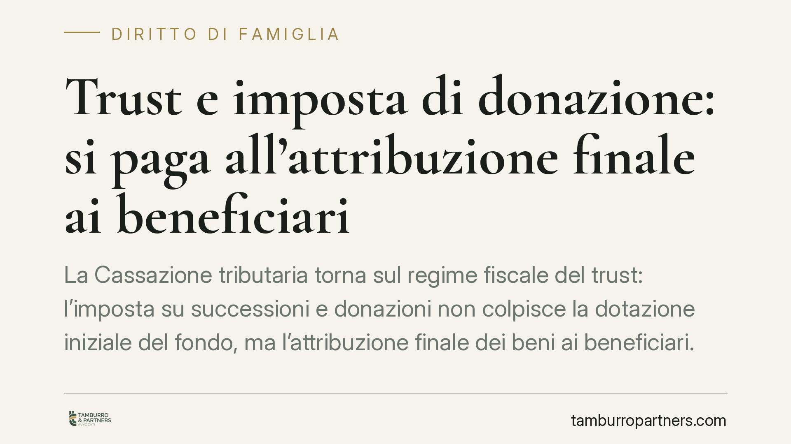

Trust e imposta di donazione: si paga all'attribuzione finale ai beneficiari
La Cassazione tributaria torna sul regime fiscale del trust: l'imposta su successioni e donazioni non colpisce la dotazione iniziale del fondo, ma l'attribuzione finale dei beni ai beneficiari. Un principio rilevante anche nei trust usati in sede di separazione e divorzio, dove l'esenzione prevista per i rapporti tra ex coniugi ha confini precisi, che qui ricostruiamo.

Il principio: la tassa matura "in uscita"
La Sezione Tributaria della Cassazione conferma un orientamento ormai consolidato: nel trust l'imposta su successioni e donazioni si applica quando i beni arrivano effettivamente ai beneficiari finali, non quando il disponente li conferisce al fondo.
La ragione è semplice. La dotazione iniziale è un atto strumentale, privo di arricchimento stabile: il trustee riceve i beni per gestirli e destinarli, non per trarne un vantaggio personale. L'arricchimento tassabile — quello che l'art. 53 della Costituzione collega alla capacità contributiva — si verifica solo con l'attribuzione finale al beneficiario.
L'inquadramento normativo
Il quadro di riferimento è stato riscritto dal D.Lgs. n. 139/2024, che dal 2025 ha introdotto nel Testo unico sulle successioni e donazioni (D.Lgs. 346/1990) il nuovo art. 4-bis TUS. La norma codifica espressamente il principio della cosiddetta "tassazione in uscita": il presupposto d'imposta si realizza al momento del trasferimento dei beni ai beneficiari.
Si tratta quindi di una regola oggi scritta nella legge, che recepisce l'indirizzo giurisprudenziale maturato dopo la fase in cui l'Agenzia delle Entrate — richiamando l'art. 2, comma 47, del D.L. 262/2006 — pretendeva l'imposta già sulla dotazione iniziale. Ai fini della liquidazione, il rapporto rilevante per aliquote e franchigie è quello tra disponente e beneficiario finale, non quello tra disponente e trustee.
L'esenzione da divorzio: cosa copre davvero
Quando il trust viene istituito per regolare i rapporti patrimoniali tra coniugi che si separano o divorziano, entra in gioco l'esenzione fiscale degli atti relativi alla crisi coniugale.
Il riferimento è l'art. 19 della L. n. 74/1987, che nel testo letterale esenta da imposte di bollo, registro e ogni altra tassa gli atti relativi ai procedimenti di *scioglimento o cessazione degli effetti civili del matrimonio* — cioè il divorzio. L'estensione dell'esenzione anche alla separazione personale non discende dalla lettera della norma, ma dalla sentenza della Corte Costituzionale n. 154/1999, che ha dichiarato illegittima l'esclusione degli atti relativi alla separazione.
L'esenzione, però, ha un perimetro ben definito: copre i trasferimenti che attuano gli accordi tra gli ex coniugi, in funzione della sistemazione dei rapporti conseguenti alla crisi familiare. Non si estende ad attribuzioni che esulano da questa funzione.
Il limite chiarito dall'ordinanza
Il punto delicato riguarda i trust in cui, oltre a sistemare i rapporti tra i coniugi, si prevedono attribuzioni a favore di soggetti diversi — tipicamente i discendenti futuri.
Un esempio chiarisce il meccanismo. Immaginiamo un trust istituito in sede di divorzio in cui il disponente destina una parte del patrimonio all'ex coniuge (attribuzione funzionale all'accordo di crisi) e un'altra parte ai propri futuri nipoti, non ancora nati. La prima attribuzione rientra nell'esenzione; la seconda, invece, è una liberalità autonoma, estranea alla finalità di regolare la crisi coniugale. Su quest'ultima l'imposta di donazione è dovuta al momento in cui i beni arriveranno effettivamente a quei beneficiari.
L'esenzione, in altre parole, segue la causa dell'atto: tutela la sistemazione tra ex coniugi, non ogni destinazione patrimoniale inserita nel medesimo trust.
Implicazioni pratiche
Per chi utilizza il trust nella pianificazione familiare — in particolare in sede di separazione o divorzio — le conseguenze sono concrete:
- la dotazione iniziale non genera imposta immediata, ma occorre monitorare il momento dell'attribuzione finale;
- l'esenzione da crisi coniugale non è un "ombrello" che copre tutto il contenuto del trust;
- le attribuzioni a terzi (figli, nipoti, discendenti futuri) restano potenzialmente tassabili secondo le regole ordinarie.
Cosa fare in concreto
- Distinguere, già in fase di redazione dell'atto, le attribuzioni funzionali all'accordo di divorzio da quelle a favore di terzi.
- Verificare quali trasferimenti rientrano effettivamente nell'esenzione dell'art. 19 L. 74/1987, come esteso dalla Corte Cost. 154/1999.
- Pianificare la fiscalità in previsione del momento dell'attribuzione finale, calcolando aliquote e franchigie sul rapporto disponente-beneficiario.
- Conservare la documentazione che collega il trust agli accordi omologati o alla sentenza di divorzio.
- Richiedere una valutazione preventiva prima di inserire liberalità autonome nel medesimo strumento.
Consigliamo di verificare sempre il testo integrale del provvedimento prima di assumere decisioni, data la rapida evoluzione della materia dopo la riforma del 2024.
---
*Contributo informativo a cura di Tamburro & Partners - Avv. Giuseppe Tamburro. Non costituisce parere legale.*
Ogni famiglia ha il suo equilibrio.
Separazione, divorzio, affidamento, assegno: se vuoi un confronto riservato su una specifica situazione, scrivi allo studio. Ti rispondiamo entro un giorno lavorativo.